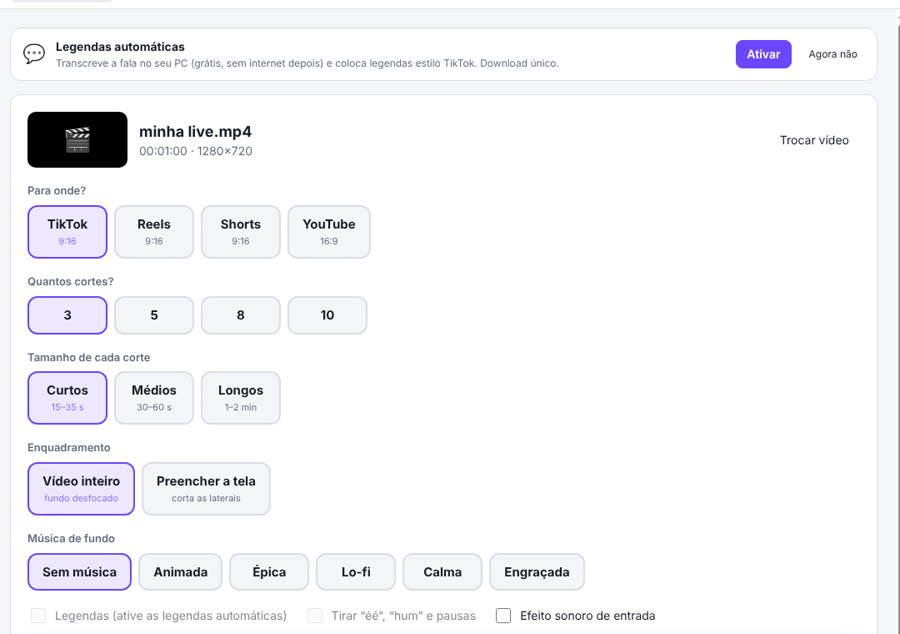
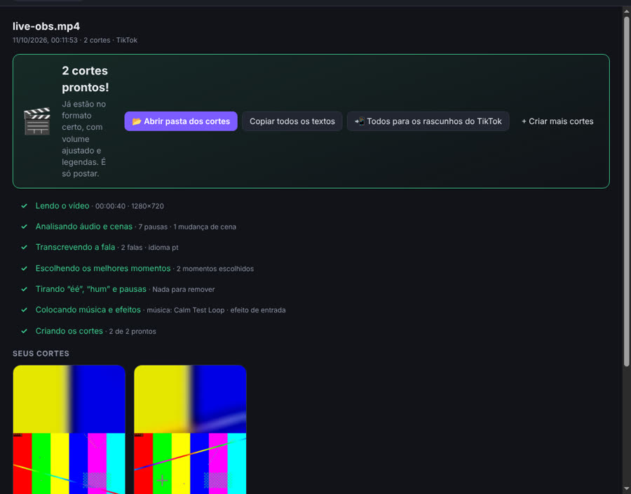
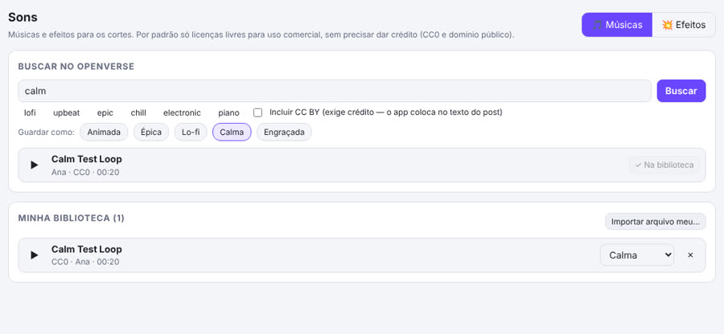

Long video in. Ready-to-post clips out.
BigLoop AutoClips is a desktop app for Windows that finds the best moments of your recordings and live streams, cuts them into vertical clips with captions and music, and helps you post them to TikTok — in two clicks.
Download for Windows See how it works
Features
Best moments, automatically
Analyzes audio energy, reactions, pauses, scene changes and what is said to pick the strongest moments, and explains why each one was chosen.
Vertical 9:16 for TikTok
Exports 1080×1920 clips with the full frame over a blurred background or a centered crop, with loudness normalized for social media.
TikTok-style captions
Optional local speech-to-text (runs on your PC) to burn word-by-word captions and remove filler words and long silences.
Music and sound effects
Royalty-free music (CC0 / public domain from Openverse) that automatically lowers when someone speaks, plus built-in sound effects.
OBS integration
Mark moments with a hotkey during your stream; when the recording stops, the clips can be generated automatically.
Local and private
Your videos are processed on your own computer. Nothing is uploaded anywhere unless you choose to send a clip to TikTok.
How it works
- Drop your video into the app (or let it pick up new OBS recordings).
- Click “Generate clips”. The app analyzes, transcribes, picks the best parts, adds captions and music, and exports each clip.
- Review and post. Watch the clips, copy the suggested title and hashtags, or send them to TikTok.


Posting to TikTok
After you connect your TikTok account (Login Kit), BigLoop AutoClips can:
- Send clips to your TikTok drafts (inbox) — you review, edit and publish them in the TikTok app.
- Post directly only after you review the caption, choose who can see the video, set comment/duet/stitch permissions, disclose commercial content and confirm — every single time.
BigLoop AutoClips never posts publicly without your explicit confirmation, and you can disconnect your account at any time in the app or in your TikTok settings.
Download
Free for Windows 10/11. The app updates itself automatically when a new version is released.
Get the latest versionThe installer is not code-signed yet, so Windows may show “Windows protected your PC”. Click “More info” → “Run anyway”.
Em português
O BigLoop AutoClips é um aplicativo gratuito para Windows que encontra os melhores momentos dos seus vídeos e lives, corta em formato vertical com legendas e música e ajuda você a postar no TikTok — em dois cliques. Os vídeos são processados no seu computador; nada é enviado sem você mandar. Leia os Termos de Uso e a Política de Privacidade.